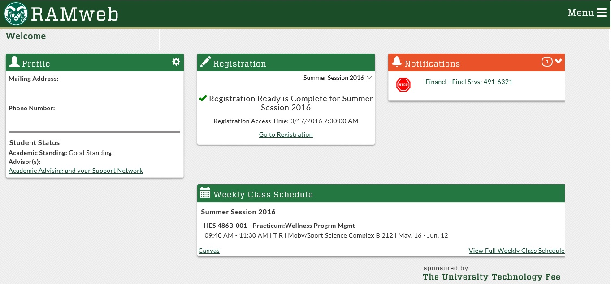
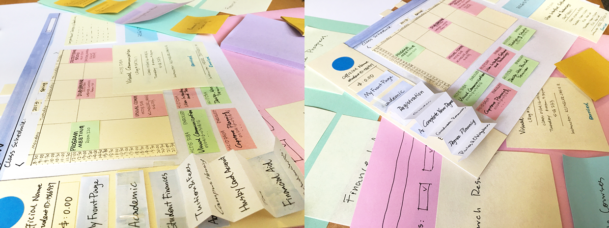
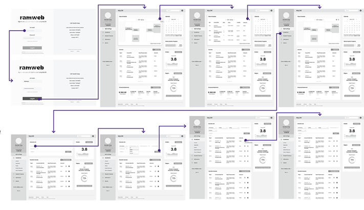
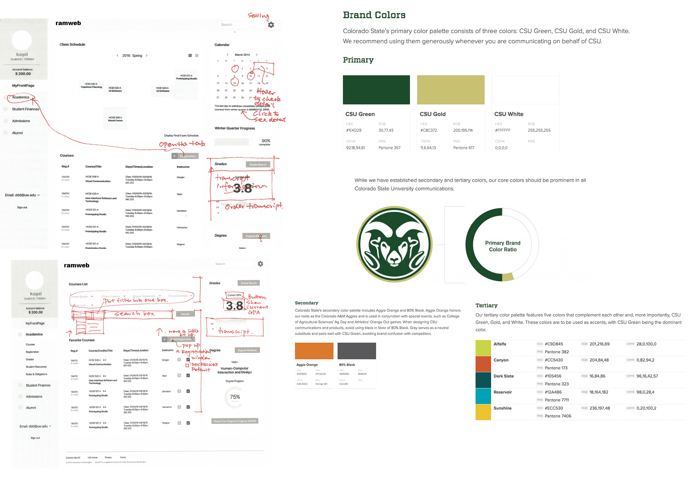

User Research, Wireframming, Prototype development, Information Architecture
Project Details
Challenge: Improve the user experience of Ramweb based on the user-centered design method.
Company: Colorado State University
Role: UX Designer
Contribution
User Interview
Paper Prototype
Usability Testing
Wireframes
Prototype development
Information Architecture
Design iteration
Tools Used
Pen and Paper
Whiteboard
Axure
Xtensio

Ramweb
Ramweb is the official management portal of Colorado State University, Fort collins. It provides the platform for all the students and faculties to check their up-to-date status based on their roles at Colostate. However, the user experience of the website is unsatisfactory for its poor information hierarchy, interaction and visual communication. So, the goal for this project is to improve the user experience based on the user-centered design method.
The whole process includes the user interview of the current website, paper prototype and usability testing, prototype development, usability test and design iteration. The redesign strategy covers from the information architecture, interaction model design till the interface design.
User Research
The stakeholders includes students, faculties, school operations administrators. However, the website’s operating side might be different from the end-user’s side. Only the end users, students and faculties, will be focused for this design solutions. Among all groups of the end users, the target users would be the mainstream students at school.
In order to deeply learn users’ demands about this management portal, interview is considered as the best method for the research. After the screening phase, two semi structured interview has been arranged. During the interview, participants talked about their experience of using ramweb as a part of their routine. They were also asked to achieve the tasks during the interview and shared their opinions toward the website.
Top findings from the interviews and observations:
Information Architecture
There is too much information showed at the same time which makes users harder to find their target. The structure of the website is not clear so that it’s very hard for users to find certain information. Some functions are rarely used even though they are located in the relatively important place of the website.
Visual Design
The color scheme of the website is out of date and more modern and fresh design is desired. The information lacks hierarchy that makes the user experience worse. No animation for providing the visual clue for users during the interaction.
Brainstorm, Sketches and Prioritization
The usability problems have been found from the pilot design research and interviews. Design questions is scoped based on the findings. Then, the initial ideas are developed during the brainstorming and ideation phases.
The paper prototype shows the general structure and interaction model of the dashboard with some key interactable information. The modification and improvement are include: Student’s profile has been shown on the dashboard; The main menu bar has been reorganized and simplified; Quick Registration Information button has been added to the dashboard.

Paper Prototype
Paper Prototype Evaluation
Since the paper prototype is a quick and dirty draft of the potential proposal, it gave the participant more chances to talk about their thought and concern during the test and some of them are very valuable for the next step: Visualized information is better than dry words; Less information will be more efficient for users; Card method is an effect way for display; A dashboard is a good way to show multiple important information; A straightforward navigation bar is needed.
Wireframe Prototype
At the first round of iteration, many detailed interaction and display methods have been developed. From macro to micro, the design at this phase is more focus on the interaction approaches at a relatively detailed level after modifying the information architecture of the website.
The Favorite Courses works as the shopping cart especially when users are doing course shopping before the registration. This feature is added to increase the efficiency of course shopping. The program’s mandatory courses will be shown automatically. At the same time, the departments or the program administrators also have the rights to recommend courses for students via this way

Low-fi Prototype
Wireframe Prototype Evaluation
Some shared usability problems surfaced from the tests: The action of “search for course to register” are various; Menu bar (side bar) is not the primary navigation guide for most of the participant; Grade panel may not be desirable for most participants; Favorite Courses is a desirable feature for all four participants.
However, the overall design is clear and simple which is much more better than the current version.
Design Iteration and development
According to the feedback and the usability problems, the design will be iterated for the second round. At the same time, the GUI will be developed at the same time.

Design
High fidelity Prototype
At the second round of iteration, detailed graphic interaction elements are defined. Also, feedbacks of the user tests are considered when making the design decision. The improvements include:
Polished the login page.
Monochromatic color scheme to keep the consistency.
Important dates are marked in the calendar.
Icons and feedbacks are designed to visualize the interaction.
Highlighted the Favorite Courses section by showing it at the focus point.
Filter has been simplified.
Transition and Animation are used to provide the interaction clues.
Identification has been added.
Summary
Iterate and develop design throughout the testing to keep design on track. With three rounds of usability testing from the very low fidelity prototypes to the high fidelity ones, the design has been developed and iterated almost at the same time. I found this is a very effective way to develop a contextual design in a very convincing way. By following the macro-to-micro mechanism, every version of the prototypes focuses on demonstrating certain ideas while every round of tests provides the feedbacks for the present idea with the new questions and demands raised for the next stage.